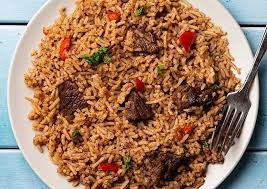

Kenyan Beef Pilau

Description
Pilau is one of the easiest dishes to master and to whip up even on a lazy night. Once you get through the spice part, and adding in the rice, all you need to do is sit and wait and get an amazing rice dish that’s full of flavor.
Ingredients
Pilau Masala mix
- 2 cups of rice
- 2 tablespoons of coriander
- 1 tablespoon of cumin
- 1/2 tablespoon of cloves
- 1/2 teaspoon of turmeric
- 1 tablespoon of cardamom
- 1 tablespoon of cinnamon
- 1/2 tablespoon of black pepper
- 2 bay-leaves
Beef pilau-ingredients
- 250 grams 1/4 kg cubed beef
- 3-4 medium sized onions
- 5 cloves of garlic
- 1/2 tablespoon of fresh ginger
- 2 cups of rice
- 4 cups of water
- Salt
- 3-4 tablespoons of vegetable oil
- 2 tablespoons of Pilau masala mix
Steps
- Start by frying the chopped onions in the vegetable oil until the onions are soft and almost browned.
- Add in the ginger and garlic paste and let this cook for 2 minutes until they’re fragrant.
- Add the cubed beef in, season generously with salt and cover.
- Allow the meat to cook until it dries up. The meat with let out its own juices and cook in them, and it will eventually dry out and begin to brown.
- Once the meat browns and caramelizes, add in the 2 tablespoons of Pilau masala mix and bay leaves.
- Let the spices toast for a minute to let them bring out their best flavors.
- Add in the washed rice and stir the rice into the spices until the rice gets mixed into the spices.
- Finally, add in the 4 cups of water and let this begin to boil while stirring to make sure everything is well mixed.
- Once it begins boiling, cover the sufuria with foil tightly and reduce the heat to the lowest heat.
- The rice will simmer on low heat for about 15-20 minutes until it dries out.
- Once the rice is dry, remove the foil and fluff the rice using a fork. Remove and discard the bay leaves.
- Use the fork to mix up the rice with any of the beef and onions that might have floated and settled at the top.
- Serve hot with some fresh kachumbari(salsa)
Home Page